Nutrizione
Un nutrizionista analizza i tuoi dati e il tuo diario e costruisce il piano alimentare su misura, consegnato entro 3 giorni dalla consulenza.
Un vero ristorante, con piatti cucinati al momento e personalizzati al grammo.
Web app: si installa dal browser su iPhone, Android e computer.
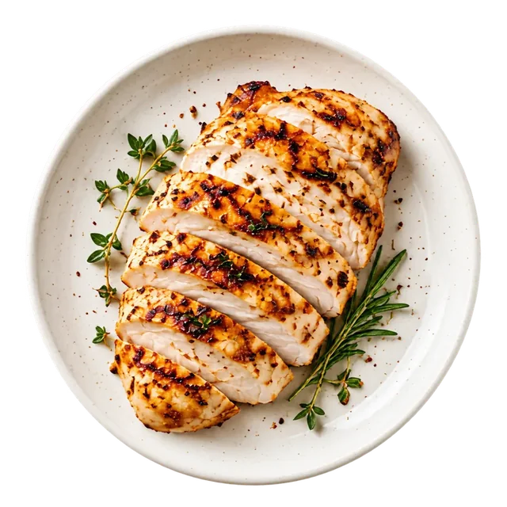
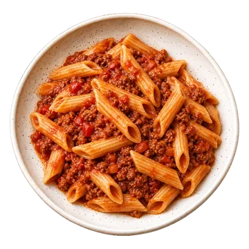
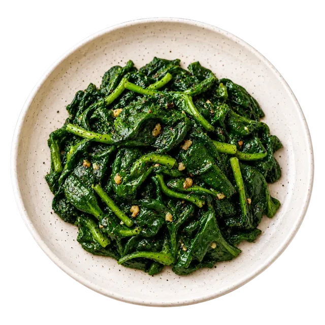
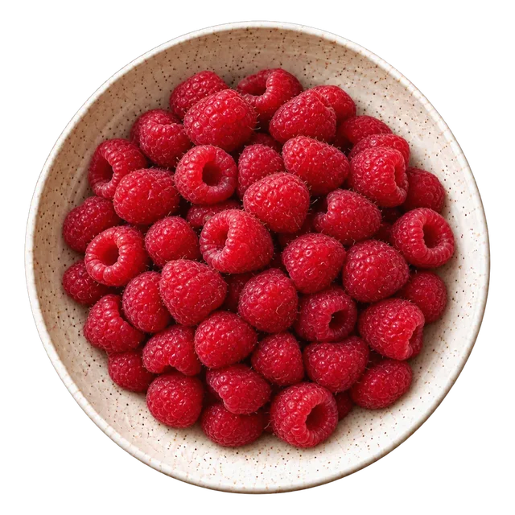

Componi il pasto e decidi i grammi di ogni alimento: calorie e macro si aggiornano mentre scegli.
Prova con questo pasto: sposta i cursori.
Calcolo dei macronutrienti
Rispondi a poche domande e MACRO'S calcolerà il fabbisogno del giorno dividendolo in proteine, carboidrati e grassi.
Con il passare delle settimane il calcolo si adatta all'andamento reale del tuo peso.

Match i tuoi macro

Diario
Schermata d'esempio con una giornata compilata.
Notifiche e consigli
Notifiche riguardanti alimentazione e allenamento: apri ogni notifica per leggere spiegazione e fonti.
Carni, pesce e altri ingredienti vengono preparati con tecniche studiate per preservare consistenza, succosità e sapore. Perché fit non dovrebbe mai voler dire triste.
La carne viene sigillata con la sua marinata di erbe e spezie aromatiche, così sapore e succhi restano dentro.
Cuoce lentamente a temperatura controllata: la consistenza resta morbida da un bordo all'altro.
Un passaggio veloce sulla griglia o in padella dà la crosta e il sapore della cottura, prima di arrivare nel piatto.
Quando non hai voglia di comporre il pasto, scegli un piatto pronto: ognuno ha calorie e macro calcolati.
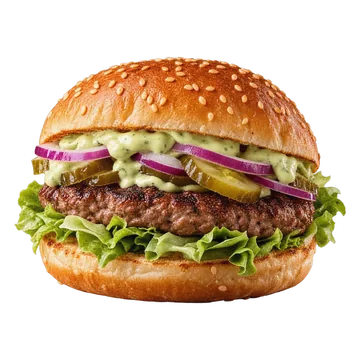
319 kcal27348
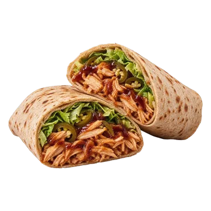
401 kcal39399
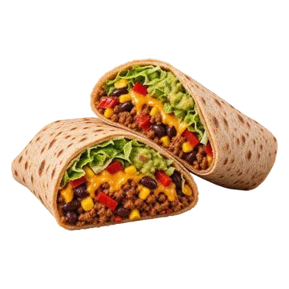
544 kcal395518
448 kcal25766
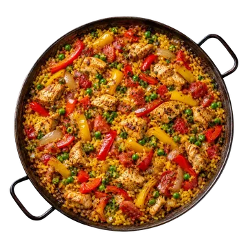
468 kcal21826
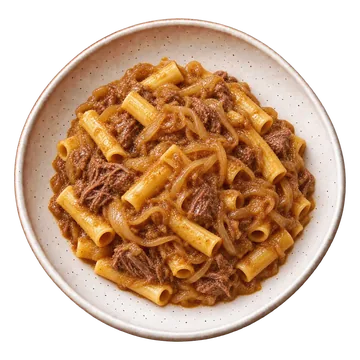
497 kcal27848
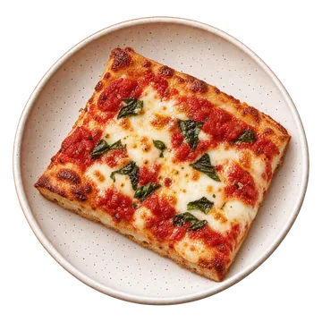
561 kcal346519
309 kcal35237
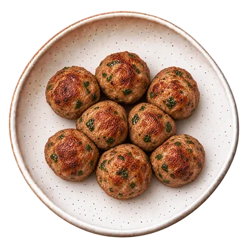
274 kcal36612
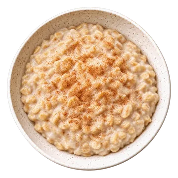
325 kcal17507
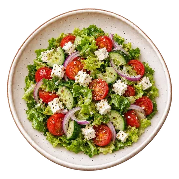
176 kcal91111
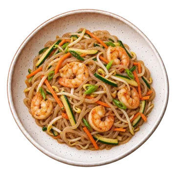
190 kcal29112
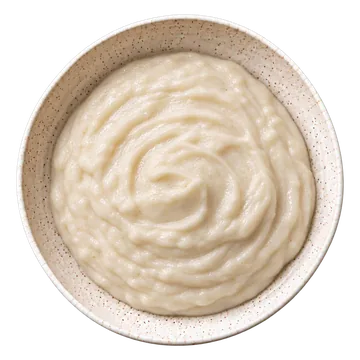
491 kcal37811
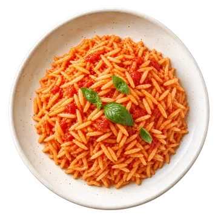
395 kcal8843
ProteineCarboidratiGrassi · grammi per porzione, valori del menu MACRO'S
Aggiungi più gusto ai tuoi piatti senza aggiungere calorie.
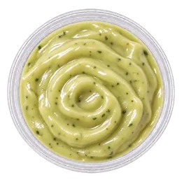
Salsa MACRO'S Zero3 kcal per 25 g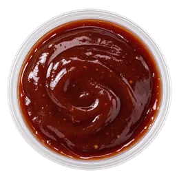
Salsa BBQ Zero4 kcal per 25 g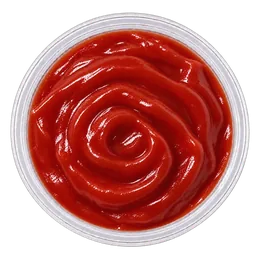
Ketchup Zero5 kcal per 20 g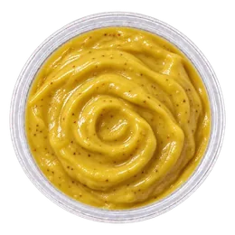
Honey Mustard Zero7 kcal per 20 g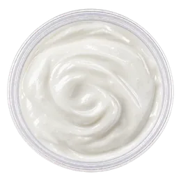
Salsa Yogurt Greco5 kcal per 30 g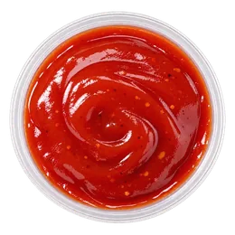
Salsa Piccante4 kcal per 20 g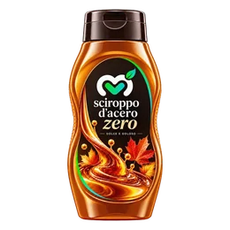
Sciroppo d'Acero Zero20 kcal per 15 g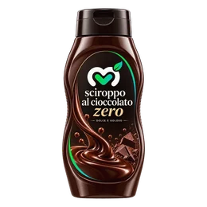
Sciroppo al Cioccolato Zero26 kcal per 15 g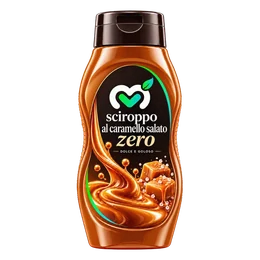
Sciroppo al Caramello Zero22 kcal per 15 g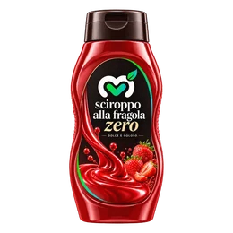
Sciroppo alla Fragola Zero9 kcal per 15 gDolci proteici senza zuccheri aggiunti, con calorie e macro calcolati.
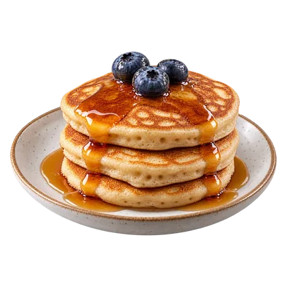
Tre pancake da 50 g, con topping a scelta.
321 kcal28347
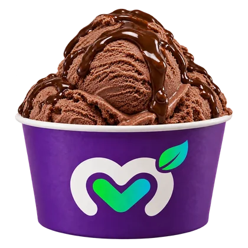
Senza zuccheri aggiunti: scegli gusto e coppetta.
155 kcal16144
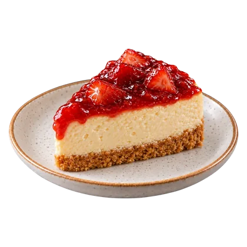
Base d'avena e formaggio fresco magro, senza zuccheri aggiunti.
302 kcal34248
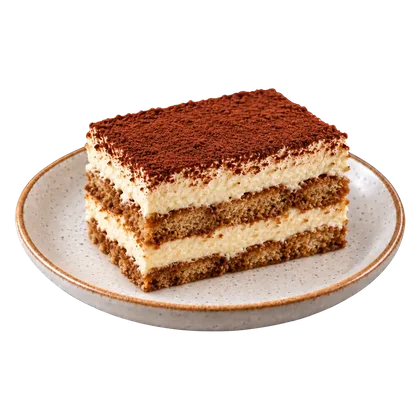
Mascarpone light e proteine whey, senza zuccheri aggiunti.
279 kcal29286
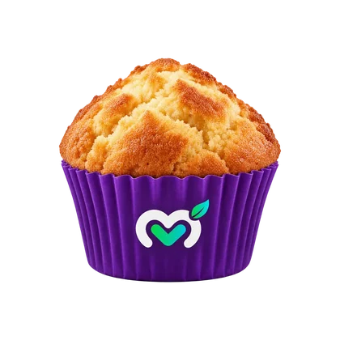
Avena, whey e albume, senza zuccheri aggiunti: quattro gusti.
169 kcal21172
Smoothie di proteine isolate: 30 g di polvere frullati con acqua, valori del menu MACRO'S. Nell'app scegli anche la dose e la base liquida.
Integratori della massima qualità con brevetti certificati.
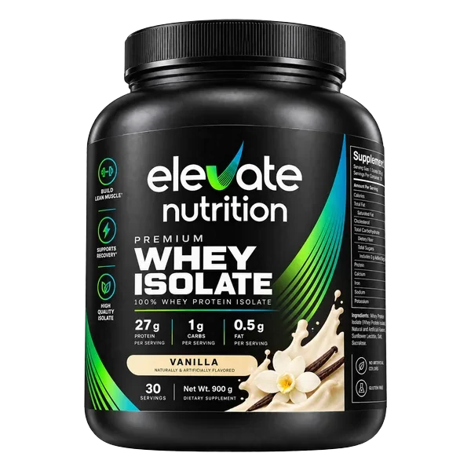
Scegli quanti pasti vuoi, noi li prepariamo e te li consegniamo. Rinnovo settimanale, sospendibile o annullabile quando vuoi.
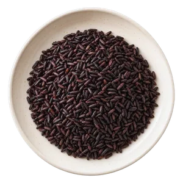
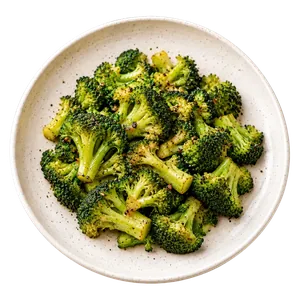
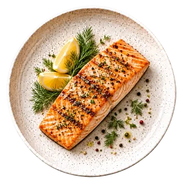
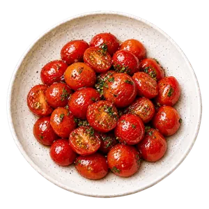
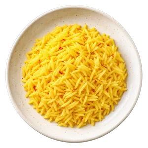
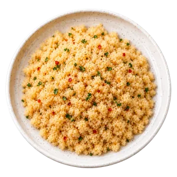
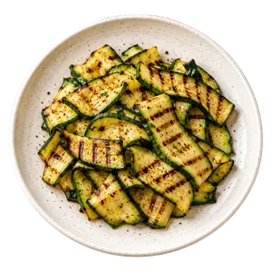
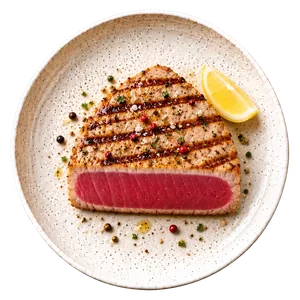
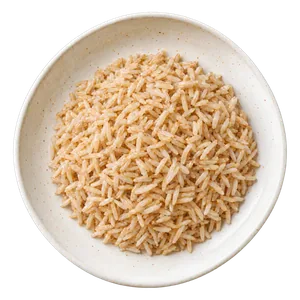
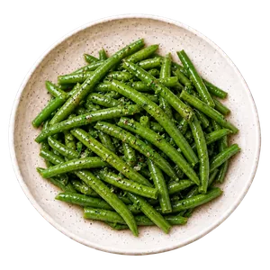
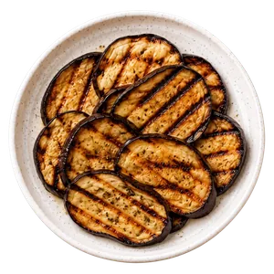
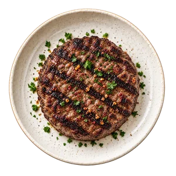
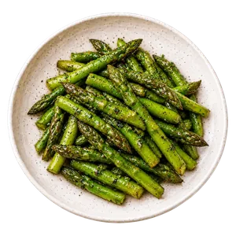
Prenoti dall'app, in sede oppure in videoconsulenza su Zoom. Il professionista vede già il tuo profilo, i tuoi obiettivi e i tuoi progressi.
Un nutrizionista analizza i tuoi dati e il tuo diario e costruisce il piano alimentare su misura, consegnato entro 3 giorni dalla consulenza.
Un trainer valuta il tuo livello e i tuoi obiettivi e prepara la scheda: esercizi, serie e progressione settimana per settimana.
MACRO'S utilizza equazioni pubblicate e verificate.
Le indicazioni dell'app non sostituiscono il parere di un medico o di un nutrizionista.
MACRO'S è una web app, si installa dal browser su iPhone, Android e computer.
Installata. Trovi MACRO'S tra le tue app.
Al momento MACRO'S è un prototipo dimostrativo. Puoi esplorare l'app, provare le funzionalità e simulare un ordine per capire come funzionerà il servizio.
Gli ordini effettuati nella demo non sono reali e non vengono elaborati.
Automaticamente. Quando è disponibile una nuova versione, MACRO'S si aggiorna direttamente dal browser, senza dover scaricare nulla dagli store.
Avrai sempre accesso alla versione più recente.
Certo. Ti basta rispondere a poche domande: MACRO'S calcola per te calorie e macronutrienti e ti suggerisce i piatti più adatti ai tuoi obiettivi.
Niente calcoli, niente bilancia, niente complicazioni.
Sì. Su Chrome ed Edge si installa come un programma, su Safari per Mac si aggiunge al Dock. Su iPhone e Android si aggiunge alla schermata Home.